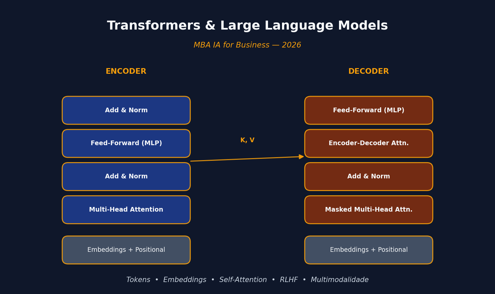

Transformers & Large Language Models — MBA IA for Business 2026

Apresentação
Este curso foi ministrado em quatro encontros de ~3h40 (26/03, 31/03, 02/04 e 07/04 de 2026) para a turma de MBA IA for Business. O fio condutor é simples: explicar, sem matemática pesada, por que a arquitetura Transformer destravou a revolução da IA generativa em linguagem, como ela funciona internamente, e quais as consequências econômicas e estratégicas disso para o mercado.
Ementa resumida — detalhar a arquitetura Transformer e os LLMs, a tecnologia específica que impulsionou a revolução da IA generativa em linguagem. Compreender como esses modelos funcionam é essencial para usá-los estrategicamente.
Temas abordados ao longo das quatro aulas
- Panorama geral da IA: cronologia e oportunidades;
- Arquitetura Transformer: atenção, tokens e embeddings (sem matemática);
- Como LLMs são treinados: dados, RLHF e alinhamento com intenção humana;
- Capacidades emergentes: raciocínio, geração de código e multimodalidade;
- Contexto e memória: limitações de janela de contexto e estratégias de contorno;
- Principais LLMs do mercado: GPT, Claude, Gemini, Llama — diferenças e posicionamento.
Avaliação
- Trabalho aplicado sobre temas vistos na disciplina — 80% da nota;
- Participação nas aulas — 20%;
- Entrega via Google Classroom até 17 de abril.
Aula 01 — De Modelos de Linguagem a Grandes Modelos de Linguagem
26 de março de 2026
A primeira aula situou o aluno no mapa. IA não é mágica — é estatística com ambição. Sobreposta a essa definição, existe uma hierarquia que é útil manter à mão:
- IA — qualquer sistema que “pensa” ou decide como um humano (Netflix, Waze, ChatGPT);
- Machine Learning — a máquina aprende padrões a partir de dados, em vez de receber regras prontas;
- Redes neurais — modelos inspirados no cérebro, conectando “neurônios” artificiais para padrões complexos;
- Deep learning — redes neurais muito maiores e mais profundas;
- IA generativa — IA que cria (texto, imagem, código, música);
- LLMs — modelos treinados com enormes quantidades de texto para entender e gerar linguagem.
A tese central, emprestada de Chip Huyen, é que a palavra que define a IA pós-2020 é escala. Essa escala tem duas consequências:
- Modelos cada vez mais capazes permitem que mais pessoas e equipes gerem produtividade e valor econômico.
- Treinar LLMs exige dados, computação e talento que só algumas organizações conseguem bancar — e daí surge o modelo como serviço: os LLMs são disponibilizados por API para que todo mundo construa aplicações sem precisar treinar o seu próprio.
A demanda por aplicações de IA aumentou, enquanto a barreira de entrada caiu — e a engenharia de IA virou uma das disciplinas que mais crescem.
Tokens, vocabulário e tokenização
A unidade básica de um modelo de linguagem é o token — pode ser um caractere, uma palavra inteira, ou uma parte de palavra como -tion. O GPT-4, por exemplo, divide “You can’t judge an ice cream by its flavor” em 9 tokens, com ~¾ de palavra por token em média. O conjunto de todos os tokens reconhecidos pelo modelo é o seu vocabulário (32.000 no Mixtral 8x7B; 100.256 no GPT-4).
Por que token e não palavra? Três motivos:
- Composicionalidade —
cooking→cook+ingpreserva significado; - Eficiência — menos tokens únicos do que palavras únicas, logo vocabulário menor;
- Robustez — palavras inventadas como
chatgptingganham uma estrutura legível.
Duas famílias de modelos de linguagem
| Tipo | O que prevê | Exemplo | Uso típico |
|---|---|---|---|
| Mascarado | Token ausente em qualquer posição (contexto dos dois lados) | BERT | Classificação, NER, recuperação |
| Autorregressivo | Próximo token, usando apenas os anteriores | GPT | Geração de texto |
Os autorregressivos dominam porque geram texto continuamente — e a “conclusão” é uma operação incrivelmente geral: tradução, resumo, código e resolução de problemas podem todos ser enquadrados como completar um prompt.
Autosupervisão — a virada de chave
O sucesso dos modelos de IA da década de 2010 (AlexNet et al.) dependia de rotulagem supervisionada: rotular 1 milhão de imagens a 5 centavos cada custa US$ 50 mil. Escalar a 1 milhão de categorias, US$ 50 milhões. Inviável.
A modelagem de linguagem é autosupervisionada: cada sequência de texto já carrega os rótulos (o próximo token) dentro de si. Isso elimina o gargalo da rotulagem — e é por isso que LLMs escalaram de forma que modelos de visão computacional supervisionados nunca conseguiram.
De LLMs a “Modelos de Fundação”
Linguagem sozinha não basta para operar no mundo real: é preciso ver, ouvir e processar outras modalidades. Daí surgem os modelos de fundação (GPT-4V, Claude 3, Gemini) que aceitam texto + imagem + às vezes áudio, vídeo, 3D, proteínas. Um modelo multimodal generativo também é chamado LMM (Large Multimodal Model).
Aula 02 — Tokens, Embeddings e Atenção
31 de março de 2026
A segunda aula mergulha em como o modelo representa linguagem numericamente e por que a atenção mudou tudo.
Do Bag of Words ao word2vec
A forma mais ingênua de transformar texto em número é o bag of words: tokeniza, monta um vocabulário e conta quantas vezes cada palavra aparece em cada frase. Funciona, mas ignora completamente o significado — é literalmente um saco.
O word2vec (2013) foi a primeira tentativa bem-sucedida de capturar o significado das palavras em vetores. A ideia: treinar uma rede neural pequena para prever se duas palavras são vizinhas em uma frase. Se são vizinhas com frequência, seus vetores (embeddings) ficam próximos no espaço. O resultado surpreendente é que propriedades semânticas emergem naturalmente — “bebê” e “recém-nascido” ficam próximos; “banco” fica em algum lugar entre “instituição financeira” e “margem de rio”.
Embeddings permitem medir semelhança semântica com métricas de distância vetorial — é assim que sistemas de busca e recomendação modernos funcionam por baixo dos panos.
O limite do word2vec: representações estáticas
word2vec gera embeddings estáticos: a palavra “banco” tem sempre o mesmo vetor, independentemente de estar em “banco central” ou “banco do rio”. Isso é um problema — o significado deveria mudar com o contexto.
Contexto com RNNs
Um primeiro passo em direção ao contexto foi dado pelas Redes Neurais Recorrentes (RNNs), usadas em arquiteturas encoder-decoder para tradução automática. O encoder lê a frase palavra por palavra e comprime tudo em um vetor de contexto; o decoder, a partir desse vetor, gera a tradução token a token de forma autorregressiva.
O problema: comprimir uma frase inteira em um único vetor é cruel para frases longas — o modelo esquece o começo quando chega no fim.
Atenção (2014) e “Attention Is All You Need” (2017)
Em 2014, surgiu a atenção: em vez de passar um único vetor de contexto ao decoder, passam-se os estados ocultos de todas as palavras de entrada, e o decoder aprende a “prestar atenção” seletivamente nas partes relevantes para cada token que está gerando.
Em 2017, Vaswani et al. publicam “Attention Is All You Need” e propõem o Transformer: uma arquitetura que elimina a recorrência e usa exclusivamente atenção. Duas consequências imediatas:
- Paralelização — sem a dependência sequencial do RNN, o treinamento pode rodar em paralelo em GPUs, acelerando tremendamente;
- Self-attention — cada token atende a todos os outros da mesma sequência simultaneamente, capturando dependências de longo alcance sem degradação.
O bloco básico do Transformer tem duas partes: self-attention seguida de uma rede feedforward (MLP). O decoder adiciona uma camada extra que atende à saída do encoder. Essa arquitetura é a base de BERT, GPT e virtualmente tudo que veio depois.
Aula 03 — A Arquitetura Transformer por Dentro
2 de abril de 2026
A terceira aula desmonta o Transformer peça por peça e amarra tudo com um exemplo concreto em português macroeconômico.
Encoder, Decoder e três arquiteturas derivadas
O Transformer original é encoder-decoder:
- Encoder (o “leitor”) — processa toda a sequência de entrada e produz uma representação rica em contexto, token por token;
- Decoder (o “escritor”) — consome essa representação e gera a sequência de saída autorregressivamente.
A arquitetura se desdobrou em três variantes, cada uma otimizada para uma classe de tarefas:
| Arquitetura | Tarefas | Modelos |
|---|---|---|
| Só encoder | Compreensão: classificação, análise de sentimento, NER, busca | BERT |
| Só decoder | Geração autorregressiva de texto | GPT, Claude, Gemini, Llama |
| Encoder-decoder | Tradução, sumarização | T5, BART |
Cada um desses modelos é uma pilha de blocos Transformer — 6 no artigo original, mais de 100 nos LLMs modernos.
Um bloco Transformer por dentro
Input tokens → Embeddings + Positional Encoding
↓
┌─────────────────────────┐
│ Multi-Head Self-Attn │
└─────────────┬───────────┘
↓
Add & Norm (residual + layernorm)
↓
┌─────────────────────────┐
│ Feed-Forward (MLP) │
└─────────────┬───────────┘
↓
Add & Norm
↓
(próximo bloco ou LM Head)1. Tokenização e embedding
O texto vira tokens, e cada token vira um vetor numérico de alta dimensão — o embedding. Geometria passa a ser a linguagem de trabalho: palavras com significados parecidos ficam próximas no espaço vetorial.
2. Self-attention — o coração do Transformer
A cada token a rede calcula três vetores:
- Query (Q) — o token que “pergunta” quais outros tokens são relevantes para ele;
- Key (K) — o que cada token “é”, o que ele oferece como conteúdo;
- Value (V) — a informação propriamente dita, caso a Key seja considerada relevante.
O produto Q × K determina pesos de atenção; esses pesos combinam os V’s para formar a nova representação contextualizada de cada token. Atenção é relevância contextual dinâmica — o mesmo token pode atender a coisas diferentes dependendo da frase.
3. Positional Encoding
Self-attention puro não sabe a ordem dos tokens — para ele, “o gato dorme” e “dorme o gato” são iguais. O Positional Encoding soma aos embeddings uma assinatura numérica única por posição, fazendo com que a ordem volte a importar.
4. Feed-Forward (MLP)
Depois da atenção, cada token passa por uma MLP aplicada posição a posição. É onde o modelo refina localmente a representação global gerada pela atenção — captando padrões não-lineares e nuances sutis.
5. Multi-Head Attention
Em vez de uma única operação de atenção, o Transformer roda várias em paralelo (multi-head). Cada cabeça aprende a capturar um tipo de relação:
- uma foca em dependências curtas (“o gato” → “dorme”);
- outra rastreia coreferências longas (“ela” → “Maria” 12 tokens atrás);
- outra pega relações semânticas ou gramaticais.
6. Saída: Linear + Softmax
A saída do último bloco passa por uma camada linear que projeta no tamanho do vocabulário, e uma softmax converte em uma distribuição de probabilidades sobre o próximo token.
Um exemplo concreto — macroeconomia em português
Frase de entrada:
“O Banco Central aumentou a taxa de juros porque…”
Passando pelo encoder:
- Embeddings —
["O", "Banco", "Central", "aumentou", "a", "taxa", "de", "juros", "porque"]vira uma matriz de vetores. “Banco Central”, “juros” e “aumentou” ficam próximos no espaço — o modelo vê política monetária. - Positional Encoding — “aumentou juros” ≠ “juros aumentaram o Banco Central” (caos macroeconômico).
- Multi-head attention — “porque” espera causalidade; “Banco Central” se conecta a “juros”; o modelo identifica que estamos em policy making.
- Add & Norm — estabiliza o aprendizado (o Copom tentando não perder o controle).
- MLP — refina: “isso aqui é sobre decisão de política monetária em reação a algo”.
No decoder:
- Masked self-attention — só olha para o passado gerado (não pode espiar o gabarito);
- Attention cruzada com o encoder — “qual parte da entrada explica o próximo token?”;
- Linear + softmax — distribuição sobre o vocabulário:
inflação: 80%desemprego: 10%câmbio: 10%
Saída: “a inflação estava acima da meta”.
Treinamento, RLHF e raciocínio
- Pré-treino — prever o próximo token em bilhões de exemplos; ajustar pesos por gradiente descendente. “Não tem consciência, tem otimização.”
- RLHF (Reinforcement Learning with Human Feedback) — humanos avaliam respostas, o modelo aprende o que é útil, seguro e claro. “É onde o modelo aprende a parecer inteligente.”
- Raciocínio — quando o modelo responde “…porque a inflação estava acima da meta”, o que parece raciocínio é na verdade padrão aprendido + cadeia de probabilidade. O modelo não pensa, ele simula pensamento.
Multimodalidade, contexto e memória
- Multimodalidade — texto, imagem e áudio viram embeddings no mesmo espaço vetorial, e o modelo gera o próximo token condicionado a qualquer mistura.
- Contexto — o modelo enxerga apenas o que está dentro da janela de contexto (ex.: 8k, 200k, 1M tokens). Fora disso, esquece. Não é memória real, é contexto temporário.
- Estratégias para contornar a janela:
- RAG (Retrieval-Augmented Generation) — buscar documentos externos e injetar no prompt;
- Resumos iterativos — comprimir o histórico antigo;
- Chunking — quebrar texto longo em pedaços;
- Chain of thought — forçar raciocínio passo a passo;
- Agentes — loops de decisão que decidem o que buscar/recordar (o hype atual).
Transformers não entendem o mundo. Eles entendem padrões. E, surpreendentemente, isso é suficiente para parecer inteligência.
Aula 04 — O Modelo de Negócios dos LLMs
7 de abril de 2026
A última aula tira o Transformer do laboratório e coloca no mercado: quem ganha dinheiro com isso, onde está a cadeia de valor, e o que isso significa para a carreira de quem está escutando.
Modelo como Serviço — retomada
A escala dos LLMs tem duas consequências econômicas já discutidas na Aula 01:
- A IA fica mais poderosa → mais aplicações possíveis;
- Treinar LLMs custa tanto que só umas poucas organizações conseguem — e elas passam a vender o modelo como serviço via API.
O que é um LLM “de verdade”
- Tokens, embeddings, atenção — as três pernas técnicas;
- O que torna o modelo grande são quatro eixos: parâmetros, dados, contexto e capacidade de generalização;
LLM não entende. Ele prevê. E isso já é suficiente para mudar o mundo.
Cadeia de valor dos LLMs
| Camada | Quem está lá | O que faz |
|---|---|---|
| Infraestrutura | NVIDIA (GPUs); AWS, Azure, GCP (cloud) | Vende o “picareta e pá” |
| Modelos fundacionais | OpenAI, Anthropic, Google, Meta, xAI, Mistral | Treina e opera os LLMs |
| Aplicações | Chatbots, copilots, agentes, verticais | Monta produtos sobre as APIs |
Quem controla a infraestrutura controla o jogo. Quem controla o modelo define as regras.
Os principais players
| Modelo | Força | Fraqueza | Estratégia | Posicionamento |
|---|---|---|---|---|
| GPT (OpenAI) | Equilíbrio geral, ecossistema forte (API + apps) | Dependência da Microsoft; custo | Produto + plataforma | “Apple da IA — controle de experiência” |
| Claude (Anthropic) | Raciocínio limpo, contexto longo absurdo, foco em segurança | Menos popular no varejo | Segurança + contexto | “O filósofo da turma — pensa antes de falar” |
| Gemini (Google) | Multimodalidade forte, dados, distribuição | Inconsistência | Integração total com ecossistema | “Não precisa ganhar. Só não pode perder.” |
| Llama (Meta) | Flexibilidade, customização | Performance de ponta menor | Open-source (quase) | “Linux da IA” |
Guerra, futuro e oportunidade
Três eixos de disputa simultâneos:
- Open vs. fechado — Llama, Mistral, DeepSeek vs. OpenAI, Anthropic, Google;
- Big Tech vs. startups — quem absorve quem;
- Infra vs. aplicação — onde fica a margem.
LLM não é produto final. É commodity em formação.
Tendências:
- Agentes — autonomia ganhando espaço sobre chat;
- Modelos menores e especializados — fine-tune > um-tamanho-serve-todos;
- Integração com dados proprietários — moat real está nos dados;
- Fine-tuning vs. prompting — prompting resolve mais do que parece.
Quem não tem dado próprio vai virar usuário — não player.
O que isso significa para a carreira
Sem romantismo, três perfis que sobrevivem à transição:
- Construtores — criam sistemas com LLMs (engenharia de IA aplicada);
- Tradutores — conectam negócio ↔︎ tecnologia (quem decide onde usar);
- Donos de dados — têm acesso exclusivo a corpora que ninguém mais tem.
Aprender ferramenta é tática. Entender o jogo é estratégia.
Dois exemplos aplicados
A aula fecha com dois estudos de caso trazidos da prática da Análise Macro:
- Exemplo 1 — IA vs. modelos clássicos: quando um LLM bate um modelo estatístico tradicional (e quando não bate). A comparação força a aula a descer do hype: LLMs são poderosíssimos em linguagem, mas não substituem um modelo econométrico bem especificado para previsão de série temporal estacionária.
- Exemplo 2 — Agente de Saúde: um agente construído para operar no domínio médico, articulando busca, raciocínio e ações. Mostra na prática o salto do “chat” para “agente” e como a metodologia CRISP-DM se adapta quando o “modelo” é um LLM orquestrado.
Leitura e referências centrais
Material-base usado na preparação das aulas:
- Vaswani et al. (2017), “Attention Is All You Need” — o artigo que definiu a arquitetura;
- Chip Huyen, “AI Engineering: Building Applications with Foundation Models” — referência para o enquadramento de engenharia de IA e modelo como serviço;
- Jay Alammar & Maarten Grootendorst, “Hands-On Large Language Models” — referência para as visualizações de tokens, embeddings e atenção;
- Shannon (1951), “Prediction and Entropy of Printed English” — raiz histórica da modelagem estatística de linguagem;
- Documentação técnica dos LLMs discutidos: OpenAI GPT, Anthropic Claude, Google Gemini e Meta Llama.
Material do curso
Os slides originais das quatro aulas estão disponíveis em PDF e PPTX no diretório teaching/Transformers/ deste repositório:
Aula01_26032026— Panorama da IA, Modelos de Linguagem a LLMs, Modelos de Fundação;Aula02_31032026— Tokens, Embeddings, Atenção e o artigo Attention Is All You Need;Aula03_02042026— Arquitetura Transformer por dentro, exemplo macroeconômico, RLHF e memória;Aula04_07042026— Modelo como serviço, cadeia de valor, principais players e oportunidades de carreira.